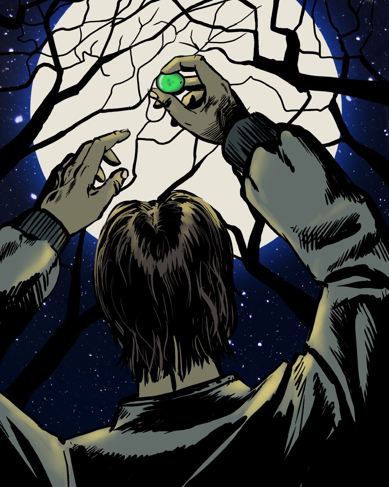

Команда wakie собралась в этот раз в далёком малообитаемом городке.
Вечер, темно, часть команды выбралась гулять, изучать местность, искать приключений.
Вот заброшенные постройки из досок, прям лабиринт этажа в три.
Доски вроде крепкие, обвалиться не должны.
Аборигенов не видать.
Идём туда.
На втором этаже на столе обнаруживаем пыльный девайс похожий на латунную тарелку,
на ней шар размером с яблоко. Имеется тумблер, провода уходят из комнаты. А мы нет.
- Ну что, включаем? - Грачик берётся за тумблер и коварно улыбается.
Лёша предусмотрительно отходит на пару шагов и внимательно наблюдает, я тоже.
Санёк даже за дверной проход зашёл - опыт! - правильное укрытие.
Остальные смелые, хотят видеть чё будет из первого ряда..
ЩЁЛК!
К счастью, пока всё ок, девайс оказался лампой.
- Смотрите, вокруг тарелки появляются полупрозрачные фрукты!!
- Это проектор дополненной реальности?
Грачик попробовал взять полупрозрачный инжир, но пальцы прошли сквозь проекцию.
Тем временем виноград уже стал как настоящий, я взял в руку - и получилось!
Виноград двигался вместе с рукой и тактильные ощущения были как с настоящим.
Но как только виноград оказался за пределами света лампы, он стал уменьшаться и твердеть,
а затем рассыпался в мелкий порошок, пылинки даже не долетели до пола - исчезли.
Грачик же дождался материализации инжира, и в свете лампы разломал плод.
- Физика потрясная, внутри всё тоже настоящее!
Через некоторое время мы заметили, что фрукты уже не тают даже когда не возле лампы.
Я решил проверить, как далеко от лампы и её света проекции будут сохраняться.
Сунул несколько виноградин в карман и выбежал из постройки.
Руку в карман - виноград на месте.
Побежал прочь оттуда.
Улицы, фонари режут темноту.
Виноград цел.
Я убегаю всё дальше.
Виноград в кармане слегка затвердел.
Вот очередной фонарь.
Достаю виноград.
Он с едва заметным свистом становится совсем как новый, пружинит, пахнет вкусно.
Свет? Может эти фонари как-то связаны?
Бегу в лес.
Ночь уже. Фонарей нет в помине.
Кроны деревьев закрывают даже свет звёзд. Которых правда много на небе. Звёздная ночь.
Виноград кармане чутка затвердел.
Достаю - лёгкий свист, понимаю что даже через кроны деревьев, даже через ткань кармана,
свет всё равно чуть-чуть проникает и поддерживает проекцию.
И днём и ночью.
Бегу обратно.
Сообщаю свои наблюдения.
Грачик скидывает ссылку - https://youtube.com/watch?v=SnQkTfSpfOU
- про виртуальность нашего мира.
AR = VR = OUR
2017-12-11

Иллюстратор: Сергей Крыцын